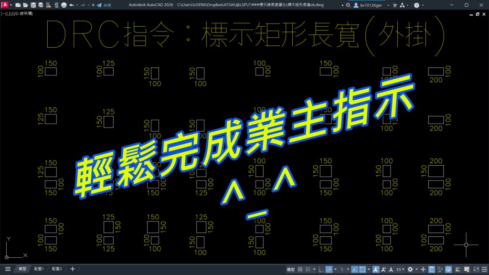

😢在處理多個矩形圖面時，還在手動標註長寬嗎？
這個 AutoLISP 程式能自動抓取矩形尺寸，快速生成標註，精準又省時。
無論是審查、檢討，還是日常繪圖，都能大幅提升效率！

✨ 程式特色：
自動判斷長寬 —— 一鍵生成尺寸標註。
智慧化處理 —— 支援不同矩形，輸出穩定精準。
提升效率 —— 減少人工操作，專注設計本身。
[贊助A分享]DRC：標示矩形長寬_程式下載
https://www.autocad-tw.com/t30252-topic
[專屬B分享]DRC：標示矩形長寬_程式下載
https://www.autocad-tw.com/t30253-topic
試用版基於以下兩種條件進行限制，**只要符合其中任何一項**，試用期將會自動結束：
1. **試用有效期間**
* 您必須在指定的日期範圍內使用：[2025-08-23] 至 [2025-09-06]。
2. **試用使用次數**
* 本程式的試用版允許您啟動使用 [500] 次。
👇試用版下載👇